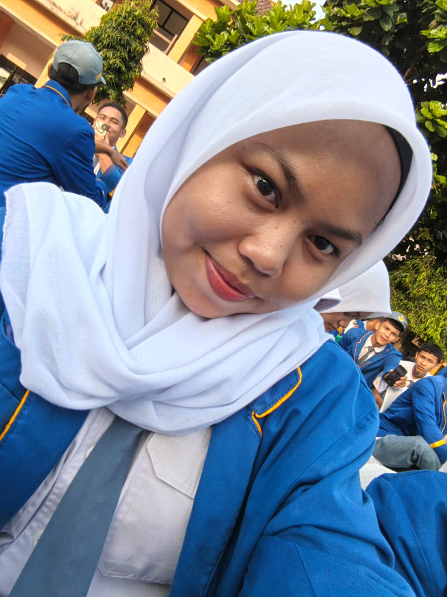

Lulusan SMK Negeri 1 Gunung Putri (2026) dengan pengalaman magang (PKL) komprehensif di bidang produksi, Quality Control (QC), dan administrasi. Memiliki fondasi kuat dalam analisis pemasaran serta latar belakang teknologi pendukung digital marketing[cite: 1].